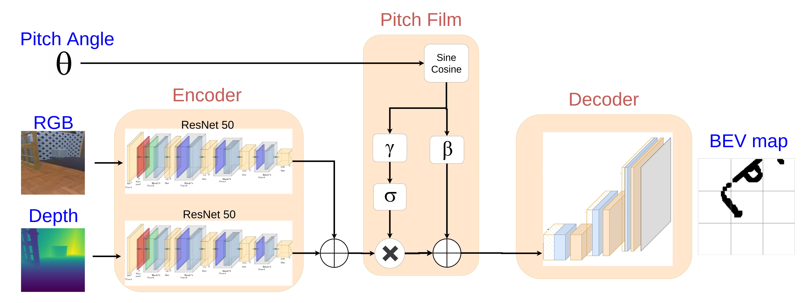

Paper Code Video
Abstract
We present a novel mapping approach for lower-limb exoskeletons that generates real-time, robot-centric bird’s-eye view (BEV) occupancy maps to support safe and efficient local navigation. This work focuses on a self-balancing wearable humanoid exoskeleton, where BEV mapping is essential for enabling autonomous balance control, footstep planning, and adaptive navigation in complex, real-world environments. The proposed method explicitly incorporates camera motion alongside RGB-D observations to improve mapping accuracy under the dynamic conditions introduced by leg-mounted sensors. To meet the computational constraints of embedded platforms, the model is optimized for real-time operation and can effectively track dynamic elements such as moving pedestrians. We further introduce a semi-supervised framework that combines simulation-based supervised training with unsupervised learning on real-world data, enabling robust generalization despite limited ground-truth labels. Experiments in both simulated and real environments confirm that the model achieves fast inference (17 ms) with low memory consumption (600 MB). Moreover, the model remains robust to the exoskeleton’s motion as well as various sources of environmental noise.
Contributions
- We present, to the best of our knowledge, the first mapping module implemented on a lower-limb, self-balancing exoskeleton, capable of generating a real-time, robot-centric BEV occupancy map to support local and safe navigation
- The proposed method explicitly incorporates the camera’s motion, particularly the pitch angle, alongside RGB-D data to improve mapping accuracy in the presence of leg-mounted camera dynamics
- In contrast to conventional SLAM algorithms, the model operates in real-time, enabling dynamic objects mapping such as walking humansm
- We propose a semi-supervised training framework that combines supervised learning on simulation data with unsupervised learning on real-world observations, enabling the model to achieve accurate and robust occupancy map generation
Approach

We propose a learning-based approach for local map generation and train a model that takes three inputs: an RGB image, a depth image, and the camera’s pitch angle. Mounted on the exoskeleton’s leg, the camera undergoes 3D rotational motion during walking, including roll, pitch, and yaw along the X, Y, and Z axes. Among these, the pitch angle has the most significant impact on mapping accuracy, as it directly effects how obstacles are perceived and projected in the BEV map. To address this, our model jointly encodes features from all three inputs and learns to predict the occupancy map representing the free and occupied areas in front of the robot. This design enables the system to account for camera motion and produce accurate and real-time map. The proposed model generates BEV maps using a three-module architecture:
- An RGB-depth feature extractor: employs two parallel ResNet-50 encoders—one for RGB images and one for depth images —producing fused feature maps.
- A pitch-aware conditioning module (PitchFiLM): encodes the leg-mounted camera’s pitch angle using sine and cosine components, generating channel-wise scaling and bias parameters to modulate the fused features.
- A convolutional decoder: progressively upsamples these conditioned features through five convolutional blocks with bilinear upsampling and dropout, ultimately producing an occupancy map via a sigmoid activation.
The output represents a robot-centric, real-world-scaled map indicating obstacle presence for short-horizon navigation and real-time obstacle avoidance in dynamic environments for lower-limb exoskeletons.
Experiments
Map Generation on the Exoskeleton
The exoskeleton follows a cyclic gait in which one leg is in the stance phase while the other swings forward. Our algorithm generates the map only during the stance phase, using RGB-D data from the camera mounted on the supporting leg. The exoskeleton was teleoperated via joystick and manually guided toward obstacles to evaluate the performance of the map generation model. Each video includes:
- A third-person view of the exoskeleton being manually teleoperated as it navigates among surrounding obstacles,
- The first-person camera image used as input to the model for map generation,
- The local, real-time BEV occupancy map predicted by our proposed method, with the robot’s position shown at the bottom center of the map,
- A comparative visualization of the map generated by RTAB-Map, which begins drifting early in each experiment and fails to capture dynamic obstacles, such as a walking person.


Occupancy Map Accuracy Evaluation
We used standard pixel-wise classification metrics to evaluate how well the predicted occupancy maps match the ground truth. The following metrics are used:
- Precision: The fraction of predicted occupied pixels that are actually occupied in the ground truth.
- Recall: The fraction of occupied pixels in the ground truth that are correctly predicted by the model.
- F1-score: The harmonic mean of precision and recall, providing a balanced measure of both.
Each row in the table reflects obstacle distance from the robot while each column corresponds to a different pitch range of the camera mounted on the robot.
Impact of Noise and Brightness Variations on Occupancy Map Prediction
We randomly selected 100 scenes and applied brightness changes to the RGB images and various noise models to the depth inputs. A brightness scaling factor ranging from 0 to 1 was applied to the input RGB images, where 1 corresponds to full brightness and 0 represents complete darkness. In the second set of experiments, we analyzed the model’s sensitivity to noise in the depth data. Here, the RGB images were kept unchanged (full brightness), while the depth maps were subjected to the following noise conditions.
BibTeX
If you find this work useful for your research, please cite:
@inproceedings{X,
title={Semi-Supervised Bird’s-Eye-View Mapping for Self-Balancing Exoskeletons Using RGB-D Sensing},
author={Leisiazar, Sahar AND Peykari, Behzad AND Arzanpour, Siamak AND Najafi, Farshid AND Park, Edward},
booktitle={IEEE International Conference on Robotics & Automation},
year={2026},
}